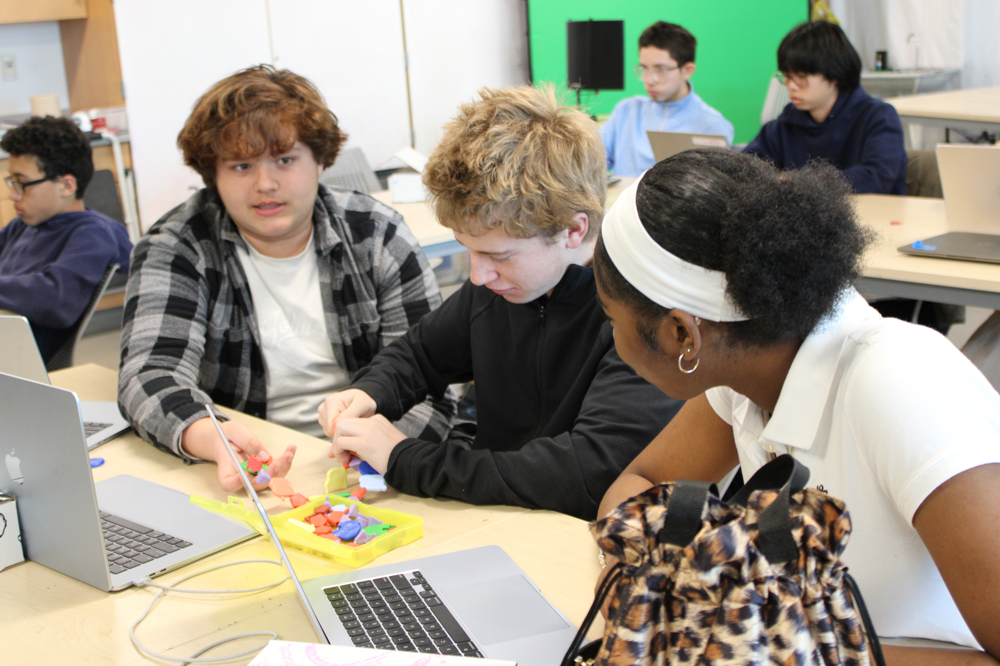

Genetics: Its a Match!

What experiment is this?
In our Last experiemnt of the school year we did a Genetics expiremnt to answer the question is race real. We did this by collecting and comparing DNA. There were 3 steps to this process. First was DNA Extraction,then PCR amplification, then Gel electrophoryses.DNA extraction is when you collect DNA samples. To do this the easiest method is usually a cheek swab. After we swabbed our checks me and my group added 2 types of chemicals to our DNA to get it ready for PCR amplification. PCR amplification is the process in which DNA is broken up and split into thousand of smaller pieces in a machine. After PCR amplification is done the DNA went through Gel electrophoresis which is a lab technique used to seperate DNA mixtures of changed molocules based on the electrical charge.Gel is poured into a mixture and electrical currents creates energy.Then the DNA is put under a special microscope. After all this we finally get to answer the question, is race real?
Data

CER
No race is not biologically real. During the genetic testing we found that the people that we matched with were not subjected to the people that we looked like. I personally matched with Conall, Ryan M and Bjorie. Initially I would not expect me to match with these people and when examining the results of your data that was the conclusion made from the DNA experiment that we did. In our year the average average number of matches without someone of a different ethnicity was 4.48% while the number of people of the same ethnicity and matches were much lower and <1 . In the 24-25 school year they ended with the same conclusion and there were <1 people with the same match while there were 4.05 people with matches but different ethnicity. The idea of biological race is saying people can be put into groups like white,black,or asian and that if you are in the same group then you are more similar biologically. It's also saying that you know what group a person is in just by looking at them and their physical features but that isn't true. During the experiment we talked about genetic variation, genetic variation is the difference in people's DNA. To me race is society's way of separating people by what they look like while ethnicity is where a person is actually from not where they may look like they are from. We know race isn't biologically real because it is a social concept and testing and actual DNA evidence doesn't support that theory. In the genetic testing we did in class what we found was the opposite of what race being biologically true would be. People who were different skin tones and had different hair types had DNA matches to people who looked opposite of them. Because of how society shapes us you would be surprised that someone who is black and from africa could match with someone who is what and is from Ireland (me and Conall). If biological race was real, myself and others would have matched with people who have the same skin tone as them or hair type and not anyone who doesn't look just like us.